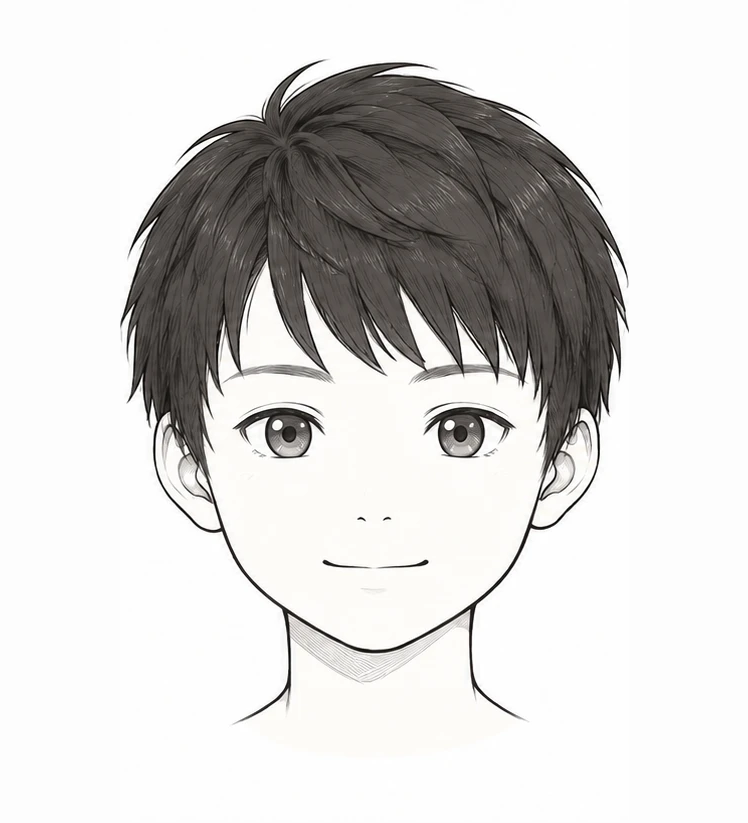
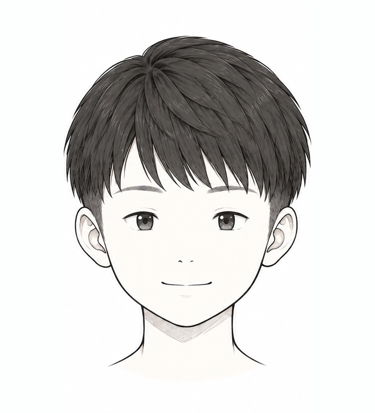
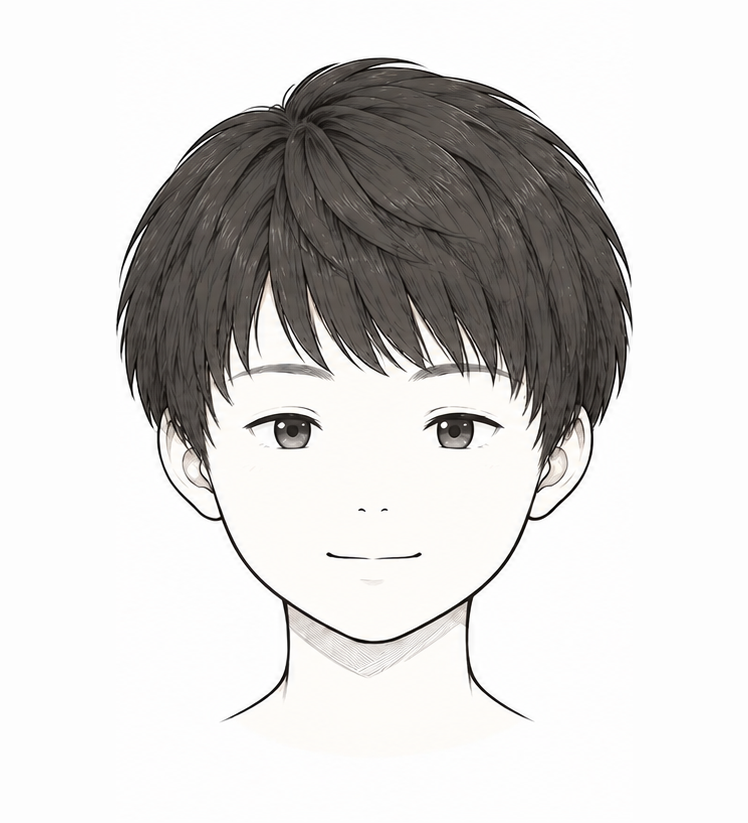
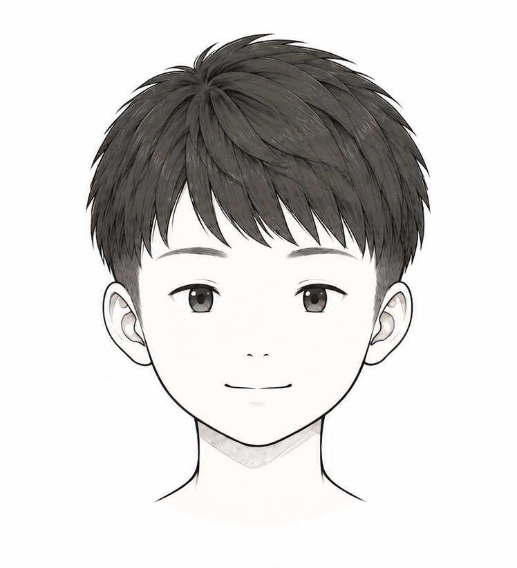
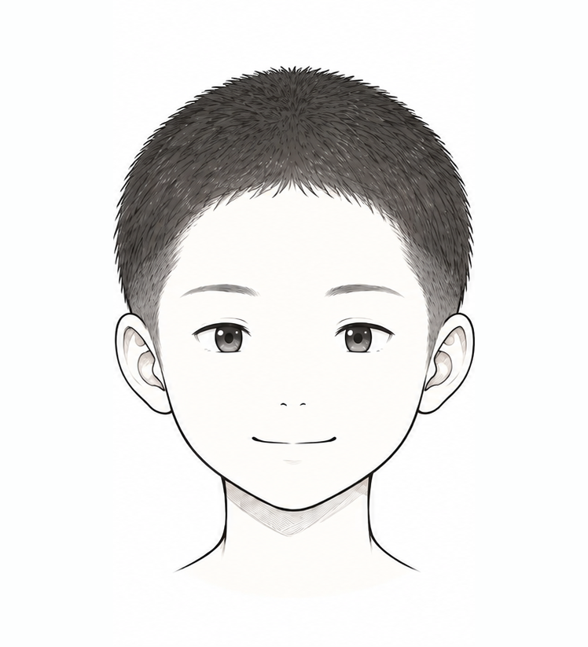
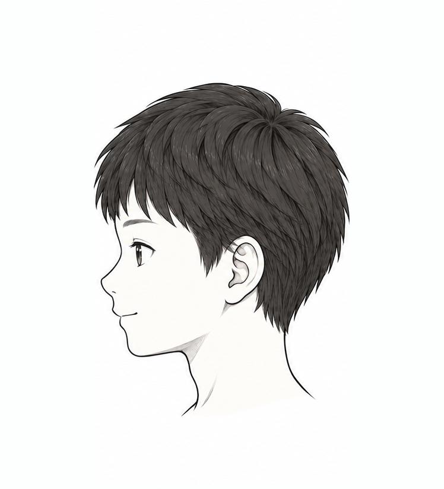
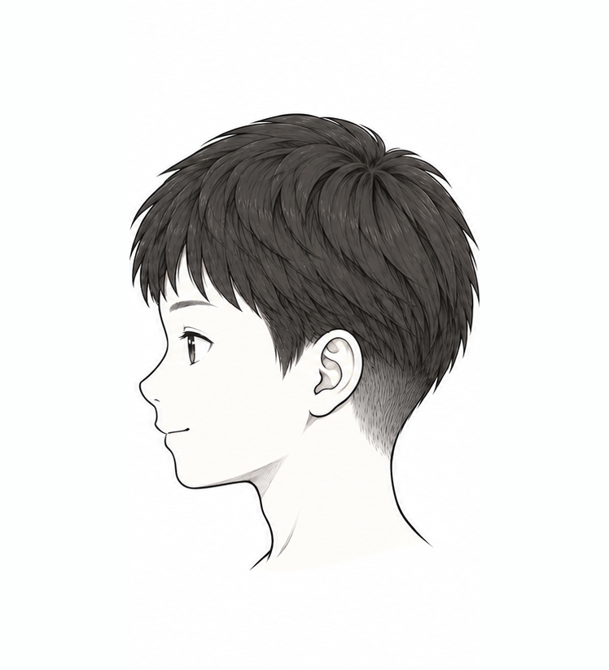
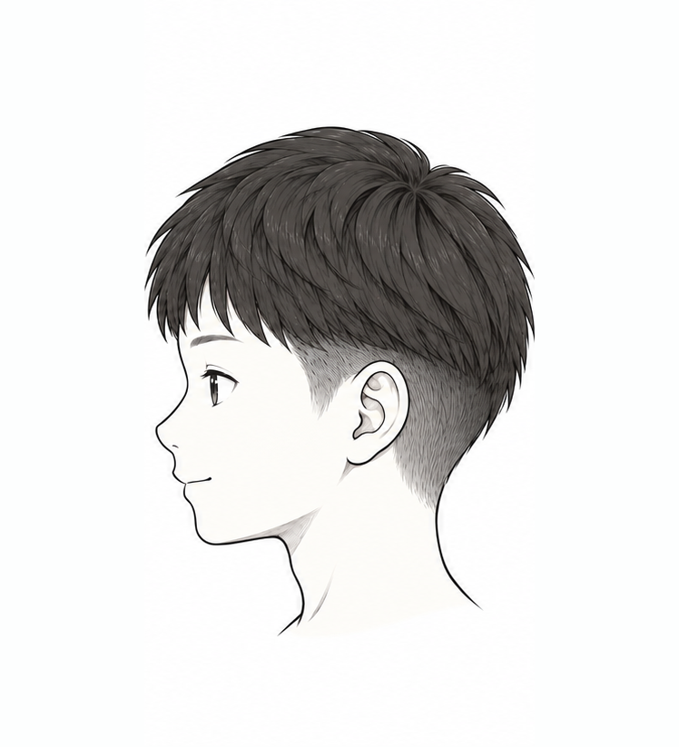
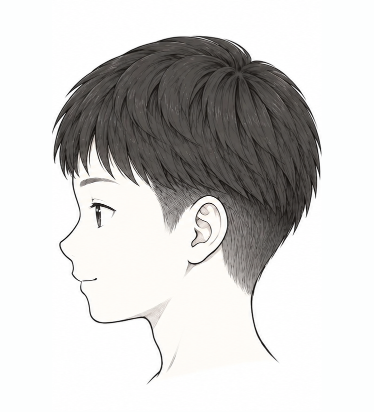
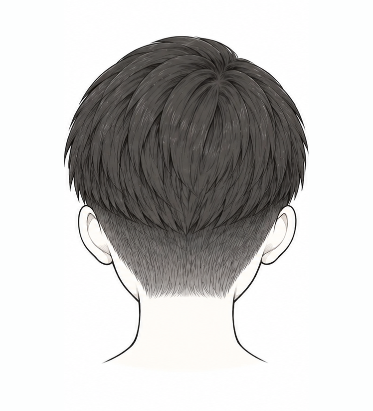

もう予約してある髪型を選んで、相談メモを作る
→No.01ナチュラルショートセット かんたん
デザイン案（静止画）。白と黒の強い対比、直線と太い罫線、差し色は理容室のサインポールの赤だけ。白黒の線画イラストがいちばん目立つように、飾りは最小限にしています。画面は操作できません。
イラストで見比べて選んで、美容師さんと一緒に決める。親子のための髪型カタログと相談メモ。



編集部が選んだ髪型です。広告は含みません。


よこはみじかく、うえはすこし長め。うえのかみが、みじかいところにふわっとかぶさるよ。
| 前髪 | まゆ毛くらい・自然におろす |
|---|---|
| 耳まわり | 出す |
| 刈り上げ | 高め 耳の上くらいまで。上の髪が少しかぶる |
| 襟足 | 短め |
| セット | ふつう・ワックス少し |



トップが5cm以上あると作りやすい。つむじが強い場合は、上の髪を少し長めに残すとかぶせやすい。最後は美容師さんと相談してね。


横から見た高さ。耳を目印に比べてね。
学校で目立たないようにするなら、低めでも十分すっきりします。伸びてきても形がくずれにくいです。